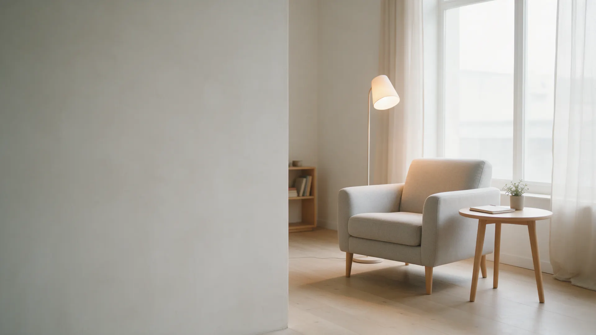
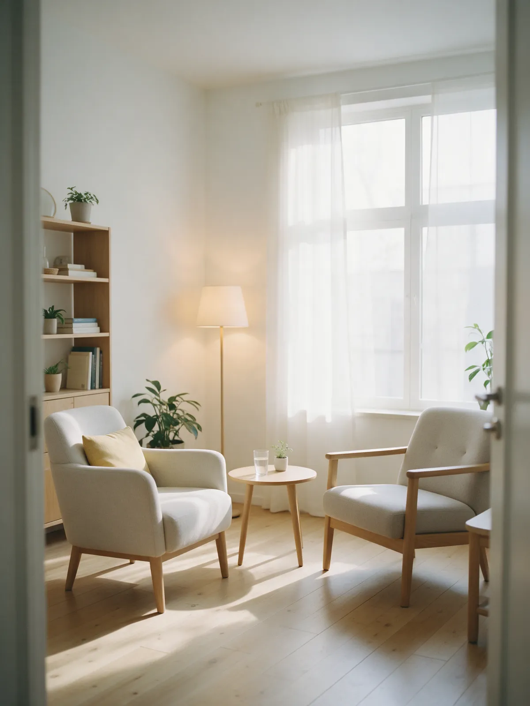
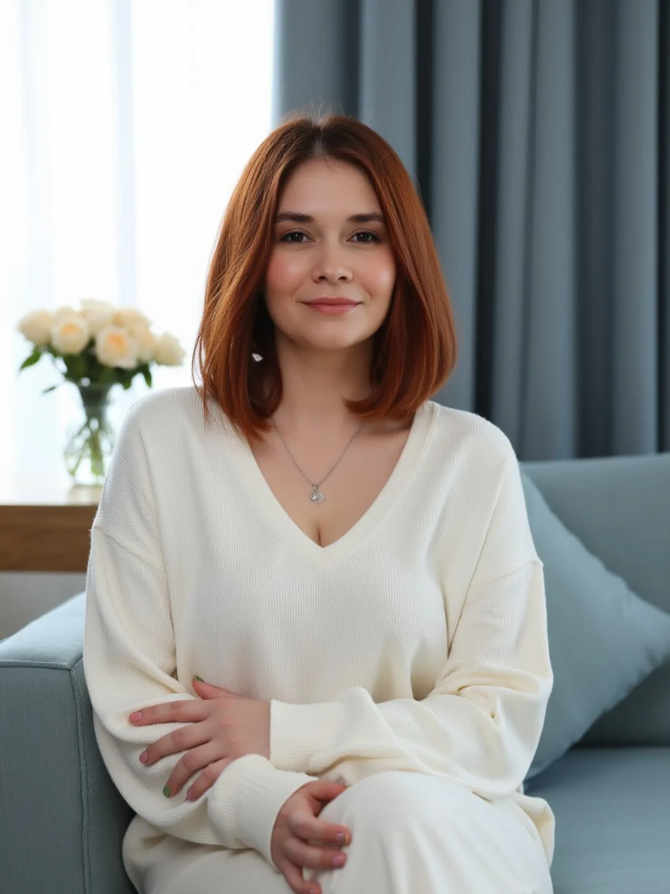
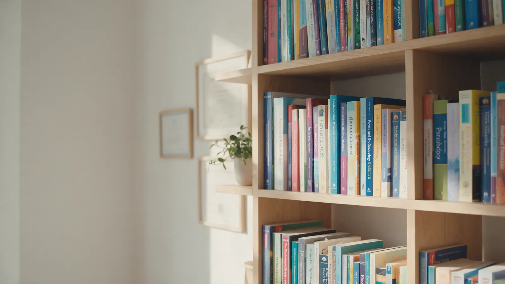
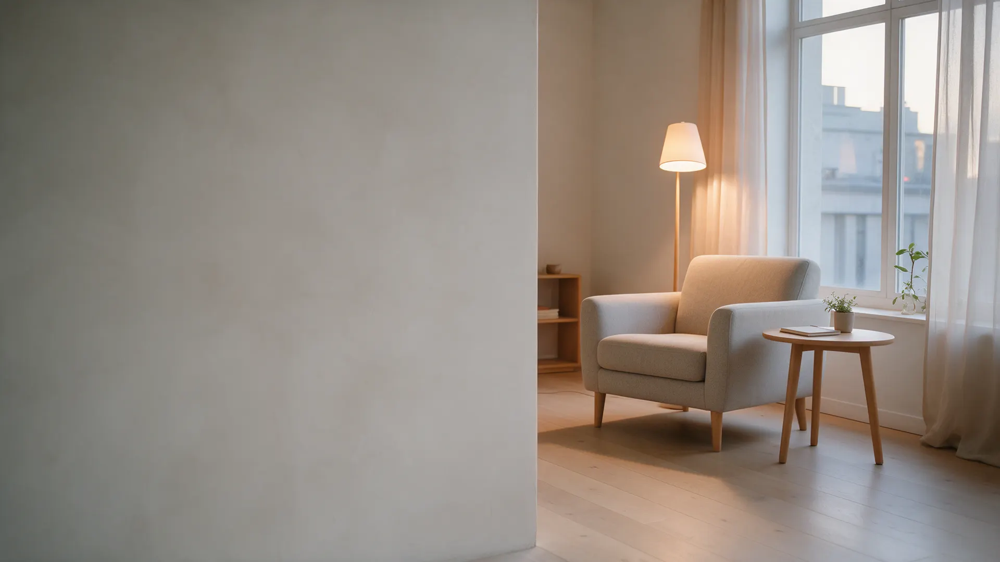

- Тревога и панические атаки
- Детско-родительские отношения
- Кризисная психология
- Отношения и самооценка
- Депрессия и апатия
Работаю с запросом, который человек приносит, а не с тем, который мне интереснее. Без советов и оценок – ваши ответы важнее моих.

Работаю с тревогой, отношениями и самооценкой. Очно и онлайн. Форматы и цены – здесь, без звонка.
Отвечаю на них здесь, чтобы вы решали спокойно, а не после того как уже набрали номер.
Если не нашли свою ситуацию в списке – это не значит, что я не смогу помочь. Первая консультация – чтобы разобраться вместе.
Тревожные мысли, которые трудно остановить; страх оценки, публичных ситуаций; постоянное беспокойство без видимой причины.
очно / онлайнКонфликты с близкими, сложности с границами, одиночество, разрыв или развод – ситуации, где нужен взгляд со стороны.
очно / онлайнОщущение «я недостаточно хорош», сложно принимать решения, зависимость от чужого мнения, перфекционизм.
очно / онлайнНет сил, ничего не хочется, сложно делать то, что раньше приносило удовольствие. Работа без медикаментов.
очно / онлайнВнезапные приступы страха, учащённое сердцебиение, ощущение потери контроля. Разбираем механизм и учимся управлять.
очно / онлайнСмена работы, переезд, рождение ребёнка, потеря близкого – моменты, когда привычные опоры перестают держать.
очно / онлайнНе нашли свою ситуацию? Напишите: разберёмся на первой встрече. Иногда запрос становится яснее уже в разговоре.
Записаться
Почти все, кто сейчас работает со мной, думали одно из трёх. Ни одно из них не оказалось правдой.
Само иногда проходит. Но если тревога, апатия или конфликт тянутся месяцами – это сигнал, что без разбора не обойтись.
Нет обязательства продолжать после первой сессии. Если поймёте, что не ваш специалист, – скажу честно и помогу найти другого.
Форматы и стоимость – ниже на этой странице. Есть краткосрочные варианты по конкретному запросу.
Не нужно понимать «почему так». Не нужно знать, что именно обсуждать. Достаточно сказать, что сейчас происходит, – разберёмся вместе.
Психолог не даёт советов и не говорит, как правильно жить. Я задаю вопросы, вы находите свои ответы.Четыре шага от «напишу» до «понял, что делать». Ничего не нужно знать заранее: запрос часто становится яснее уже в разговоре.
Договариваемся о времени и формате: очно в кабинете или онлайн. Никакого «подождите три дня»: обычно отвечаю в тот же день.
Рассказываете, что сейчас происходит. Я задаю вопросы, слушаю, в конце говорю, как вижу ситуацию и что можно сделать.
Если решаете продолжить – определяем направление и примерный объём: краткосрочная работа по запросу или более длительная. Давления нет.
Обычно в одно и то же время. Между сессиями доступен в мессенджере для коротких вопросов.
Цена зависит от формата и длины работы. Первая консультация – стандартная стоимость, без «вводного» ценника.
60 минут. Рассказываете, что происходит – слушаю, задаю вопросы, говорю, как вижу ситуацию и что можно сделать.
Очно или онлайн, без обязательства продолжать50 минут. Регулярная работа – обычно раз в неделю, в одно и то же время. Дата следующей встречи договаривается в конце.
Очно в кабинете в Ярославле50 минут. Тот же формат работы, без поездки. Удобно, если вы за городом или хотите работать из дома.
Видеозвонок в любом мессенджереРабота по конкретному запросу – тревога, страх, сложная ситуация. Конкретный результат за обозначенный блок встреч.
Скидка 10% при оплате блокомРабота с паттернами, которые формировались годами. Более глубокие изменения – больше времени. Обычно от 3 месяцев.
Еженедельно, один формат на весь периодОбразование и подход – только те, что есть в документах. Ничего лишнего: ни «лучшего в городе», ни выдуманного стажа.

Работаю с запросом, который человек приносит, а не с тем, который мне интереснее. Без советов и оценок – ваши ответы важнее моих.


Напишите в мессенджер: подберём время, ответим на вопросы. Не нужно готовиться – просто напишите, что сейчас происходит.